Blender – Introdução às texturas e materiais
APLICANDO TEXTURAS
Nos exemplos que se seguem iremos utilizar 2 imagens como texturas e uma (GNU) tem Alpha Channel.
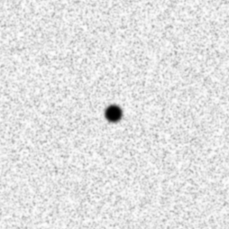 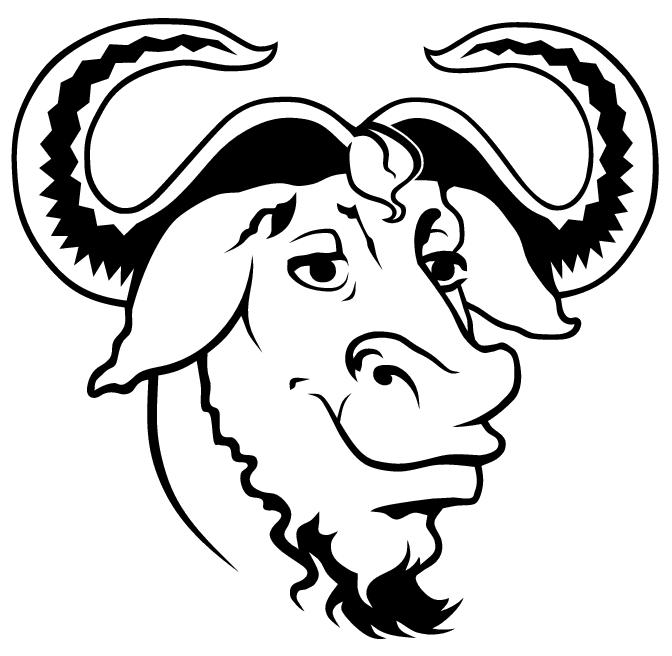Iremos utilizar uma lâmpada Sun, na mesma posição da lâmpada original, sem alterar qualquer configuração.
A cena utilizada é a da imagem abaixo...
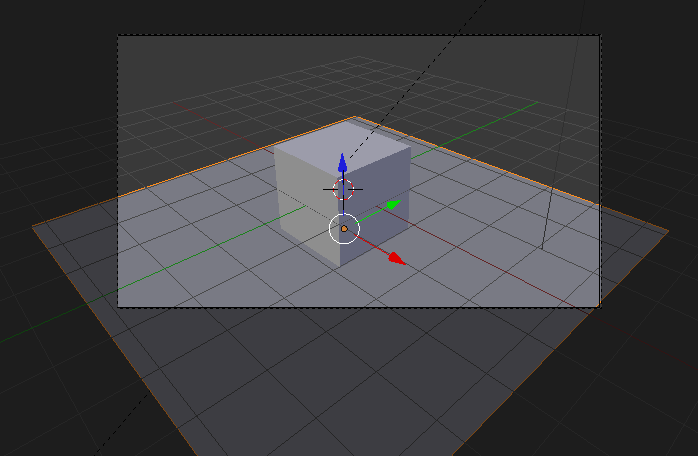 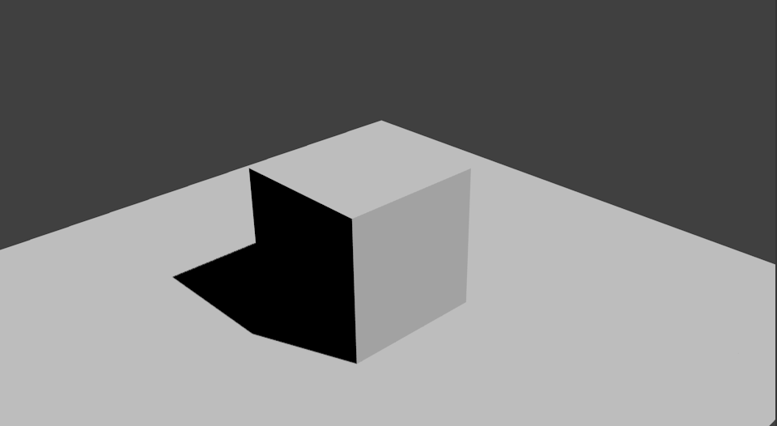1- Seleccione o cubo.
No painel Material poderá editar os materiais associados a este objecto. Um objecto pode ter vários materiais.
Este cubo já tem um material, chamado Material, associado. Pode alterar o nome do material.
Clique na cor Diffuse e utilize os valores RGB para introduzir um vermelho total (RGB 100, 0, 0).
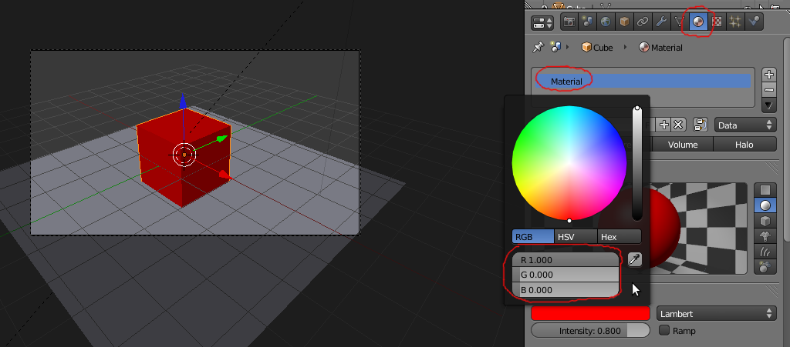2- Vamos atribuir um novo material verde (RGB 0, 100, 0) a apenas uma face do nosso cubo.
Passe para Edit Mode. Seleccione a face do topo do cubo.
No painel Material, clique no sinal + para adicionar uma nova slot de material neste objecto. O Blender vai duplicar o material já existente e indica que este mesmo material está a ser partilhado por 2 instâncias ao apresentar o número 2 ao lado do nome Material.
Clique no número 2 (ao lado do nome Material) para tornar este material independente do anterior, para ter 2 materiais diferentes em 2 slots.
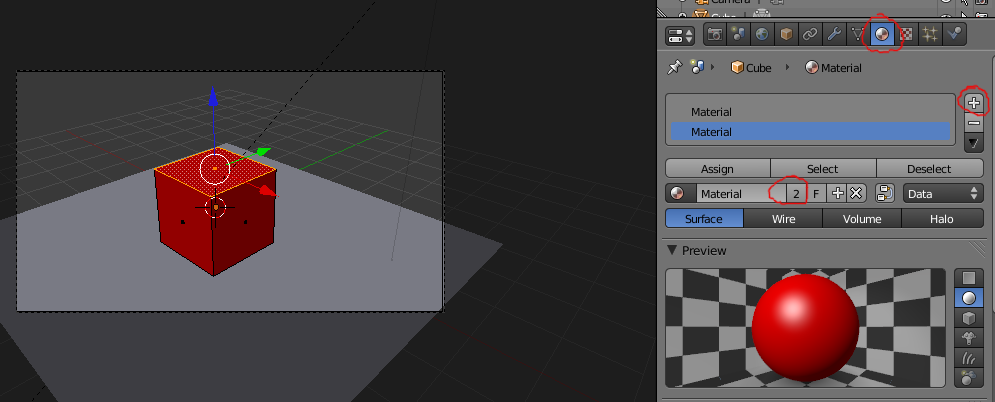3- Se não tiver alterado o nome do primeiro material, o novo material criado vai chamar-se Materia.001.
Altere a cor de Diffuse para verde (RGB 0, 100, 0).
Clique em Assign para atribuir o novo material verde à face do cubo que tem seleccionada.
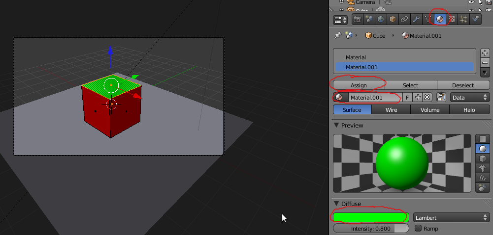4- Vamos associar a imagem da cabeça do Gnu ao nosso cubo.
Seleccione o material “Material”. Passe para o painel Texture. O cubo já tem uma slot de textura associada e activa. Escolha o type Image or Movie e carregue a imagem no painel Image.
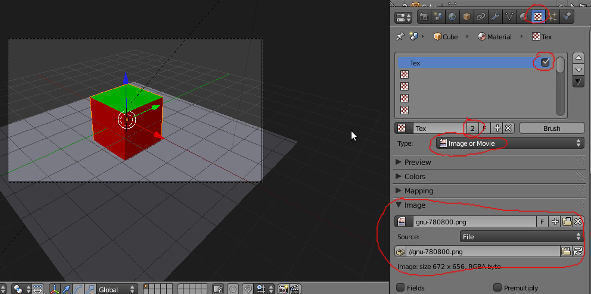Se renderizar, o resultado deverá ser semelhante a este.
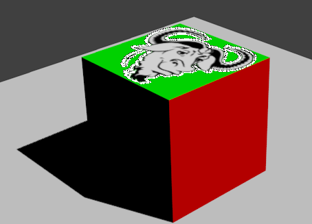Como é fácil perceber, existem vários aspectos a corrigir.
a) Corrigir os erros que rodeiam o elemento opaco da imagem, melhorar a utilização do Alpha: active a opção Premultiply.
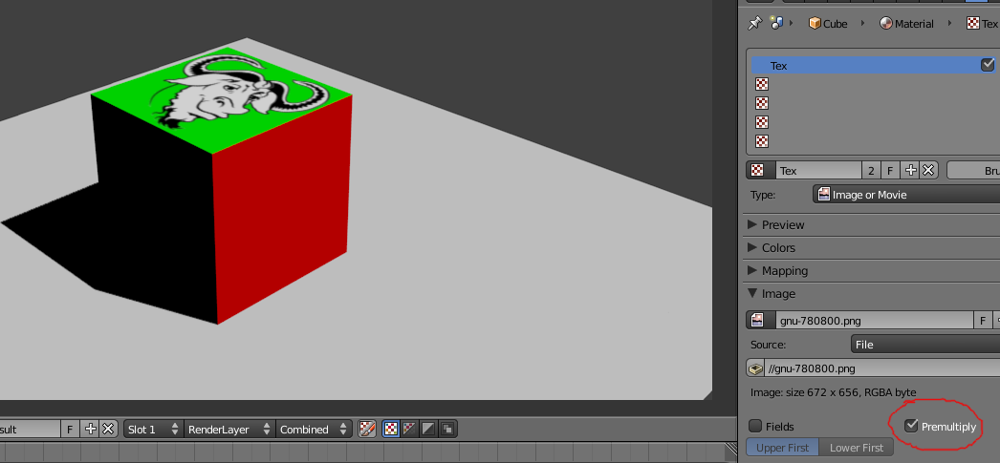b) Desactivar a textura de imagem na face verde: volte ao painel Material e seleccione o material verde (Material.001); vá ao painel Texture e desactive a textura. Se renderizar, a imagem já não aparece na face verde.
 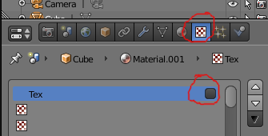
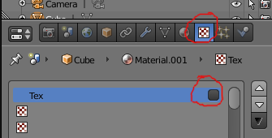
c) Fazer com que a textura de imagem surja nas faces vermelhas: volte ao painel Material e seleccione o material vermelho. Vá ao painel Texture e, no painel Mapping, escolha uma Projection do tipo Cube.
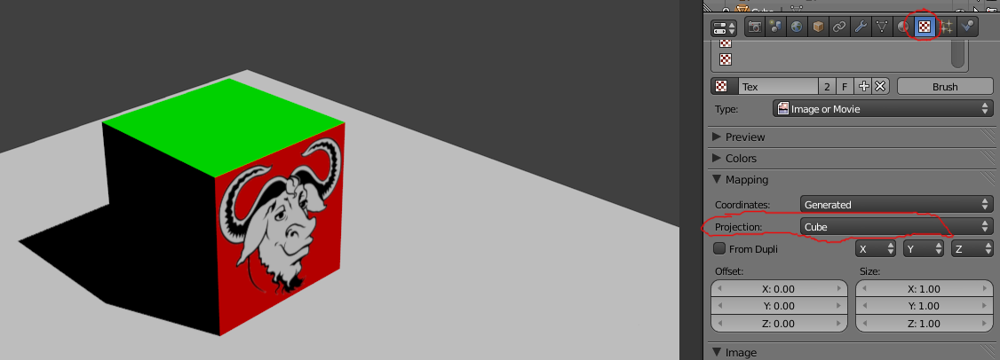Ao inserirmos uma textura, esta vai ser automaticamente mapeada/aplicada com um a Projection do tipo Flat: só surge projectada ao longo de um eixo e como se estivesse a ser inserida na visão de topo . Ou seja, a imagem vai surgir projectada ao longo do eixo Z, vai sugir no topo e na base da caixa. No nosso caso, como temos um material para o topo (verde) e outro diferente nas restantes faces (vemelho), a imagem só surgia no topo do cubo, no material verde.
As Projections Flat, Cube, Tube e Sphere definem 4 modos de aplicação da textura. Devem ser utilizados dependendo da forma do objecto e do efeito pretendido. No exemplo, a imagem está a ser projectada individualmente em cada face (Cube) onde existe o material vermelho.
Através dos valores de Size podemos controlar a dimensão da textura nos vários eixos. Através dos valores de Offset controlamos a posição/deslocação da imagem no objecto.
Os menus X, Y e Z permitem contruir um “puzzle” de coordenadas XYZ que serve para manipular a aplicação da textura.
Os menus deverão ser interpretados da seguinte maneira: o primeira menu serve para definir o eixo que aponta da esquerda para a direita; o segundo menu define o eixo que aponta de baixo para cima; o terceiro indica o eixo da profundidade.
Para perceber melhor, talvez seja melhor voltar a activar a imagem do material verde e manipular esta. Coloque-se em modo de visão de topo e olhe para o objecto, perceberá então as coordenadas: seta vermelha (eixo X) aponta para a direita; seta verde (eixo Y) aponta para cima. Experimente rodar a textura alterando os eixos nos menus.
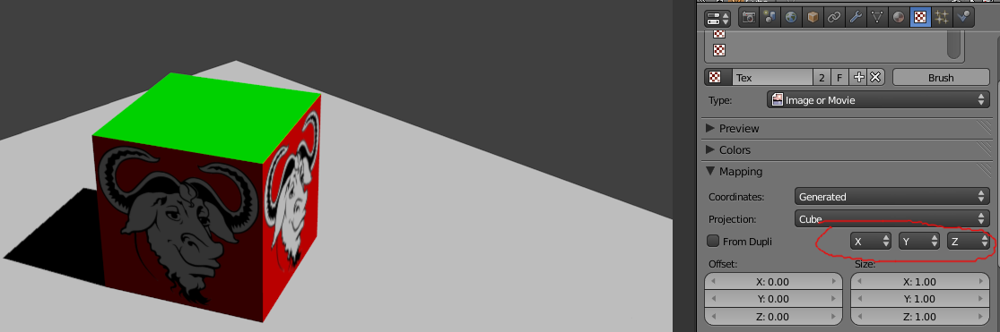 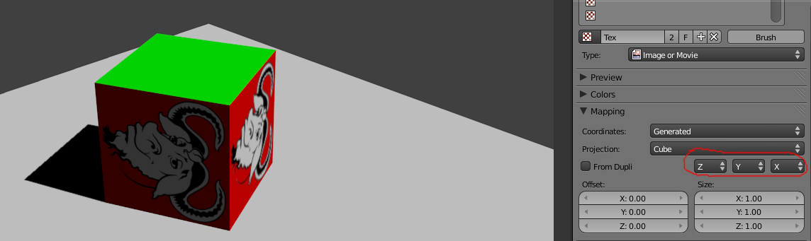5- Depois de experimentar, deverá ficar com a imagem da cabeça do Gnu a ser visível nas faces vermelhas e apenas a cor verde na face de topo.
Seleccione o Material.001 (cor verde) no painel Material. Vá ao painel Texture, clique numa slot vazia e no botão New para criar uma nova slot de textura para o Material.001.
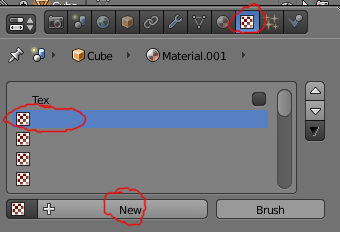 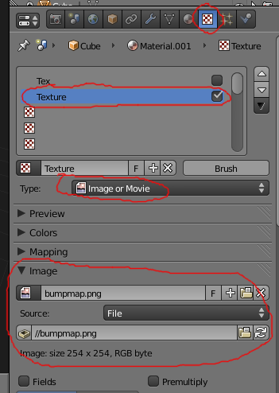Escolha o type Image or Movie.
Adicione a segunda imagem fornecida através do painel Image.
Como esta imagem não tem Alpha Channel, não necessita de activar o Premultiply.
Se renderizar, deverá obter uma imagem similar a esta...
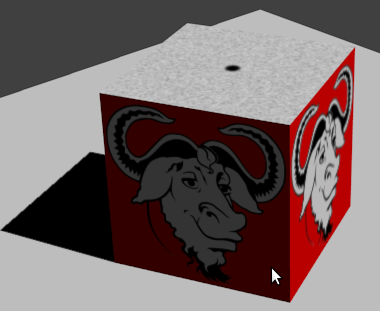6- A nova imagem inserida está a ser utilizada para “influenciar” a cor do objecto. No entanto, existem muitas outras formas de utilizar uma textura. No exemplo abaixo, desactivámos a influência na cor e activámos a influência na geometria, no valor dos “normals”, criando um bump map.
No primeiro exemplo, a imagem está a ser utilizada para definir a “altura”. Cor escura é mais fundo.
São apresentadas outras possibilidades, combinando diferentes tipos de “influências”.
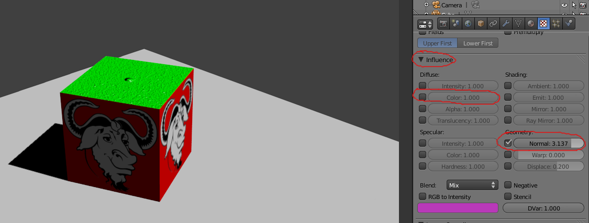 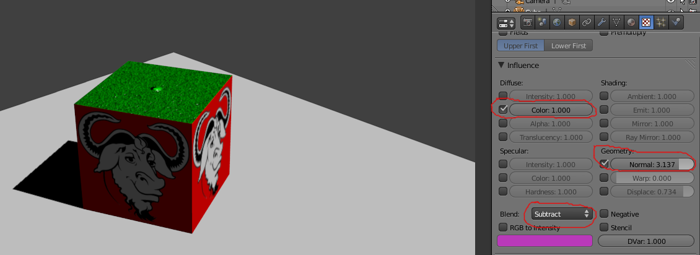 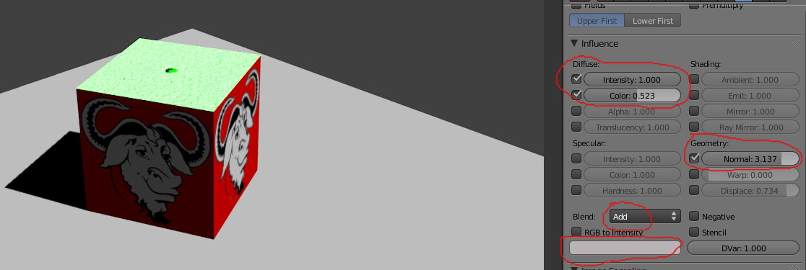
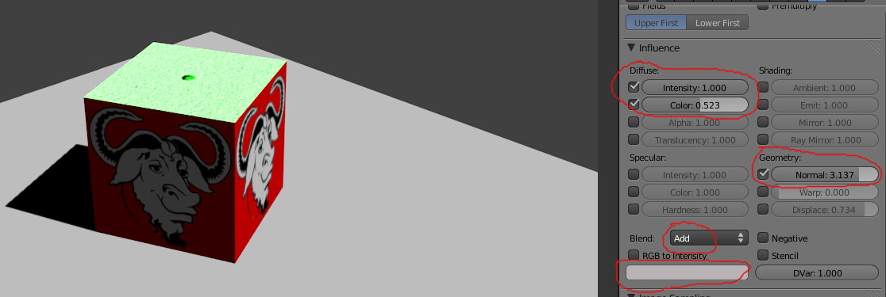
7- No exemplo abaixo, adicionámos um objecto de Texto. Adicionámos um material ao plano que está debaixo da caixa e do texto. No material do plano activámos a opção Shadow Only para que o plano surja como invisível e apenas mostre as sombras dos objectos.
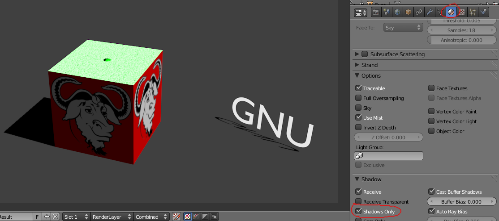O material do texto tem activada a opção Shadeless. Emite sombras mas é insensível à luz e sombras. Daí que seja bem visível na imagem...
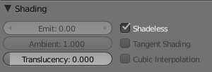8- No exemplo abaixo, desactivámos o Shadow Only do plano e activámos o Mirror. O texto tem as mesmas definições
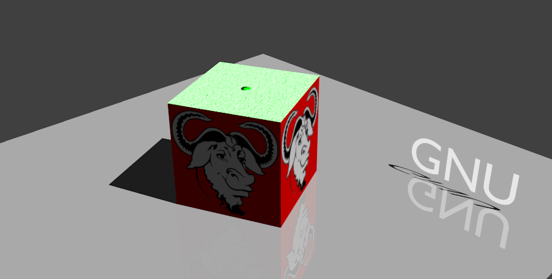 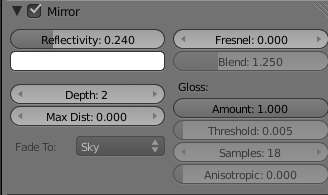